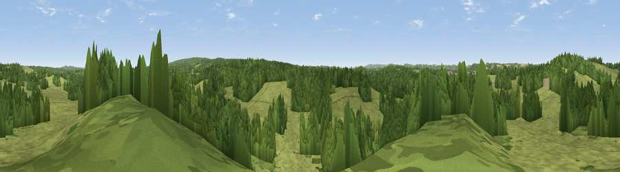

Viewpoint near Dockenfield
#39347 in England · top 65% of its area beats it · near DockenfieldWhere it is
The exact computed spot (SU 82325 38975). Click the marker for map links.
The view, rendered

A 360° render of this exact spot computed from the terrain model, tree cover and land cover — summer colours, afternoon light, calibrated against photographs of famous viewpoints. Real trees, hedges and buildings will differ in detail.
The panorama
Grey silhouette: terrain skyline in each direction (720 bearings, Earth curvature and refraction included). Dashed green: skyline with trees (+15 m) and buildings (+8 m) as obstacles. Blue strip: how far the ground is visible on each bearing.
Where the view opens
Wedge length = distance to the farthest visible ground on that bearing (vegetation-aware). Rings at 10, 25 and 50 km.
What fills the view
61% grassland · 38% woodland ·
Angular shares of the visible panorama (visual magnitude), not map area. Landscape diversity 0.32 (0–1 Shannon).
Key numbers
More beautiful places nearby
The staircase of upgrades: each row has a higher view potential than everything closer. Driving times are estimates from straight-line distance, calibrated against real road routing — check an actual route before setting out.
| Place | Direction | Drive | Score |
|---|---|---|---|
| Abbotts Wood Hill | NNW · 1 km | ~3 min | 37.5 |
| Viewpoint near Kingsley | W · 4 km | ~9 min | 44.1 |
| Viewpoint near Kingsley | W · 5 km | ~10 min | 48.1 |
| Viewpoint near Hindhead | ESE · 8 km | ~15 min | 60.4 |
| Gibbet Hill | ESE · 8 km | ~16 min | 64.9 |
| Temple of the Four Winds | ESE · 9 km | ~18 min | 66.6 |
| Viewpoint near Haslemere | SE · 13 km | ~24 min | 68.9 |
| Viewpoint near Fernhurst | SE · 14 km | ~25 min | 75.1 |
51.14413, -0.82452 · source: screening · position refined by local search. Computed location — check access rights before visiting.